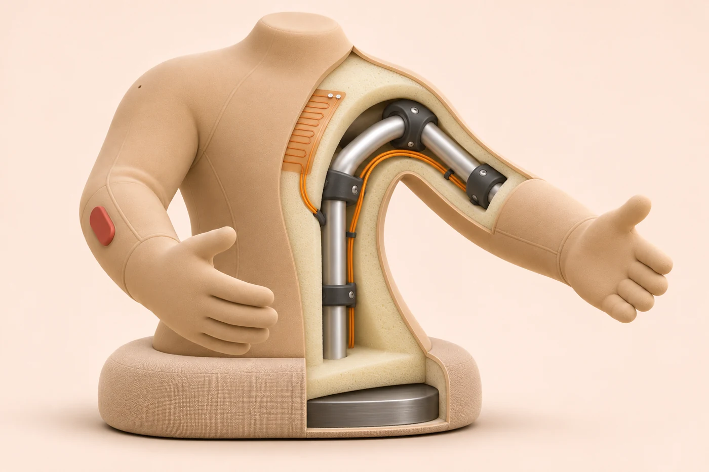
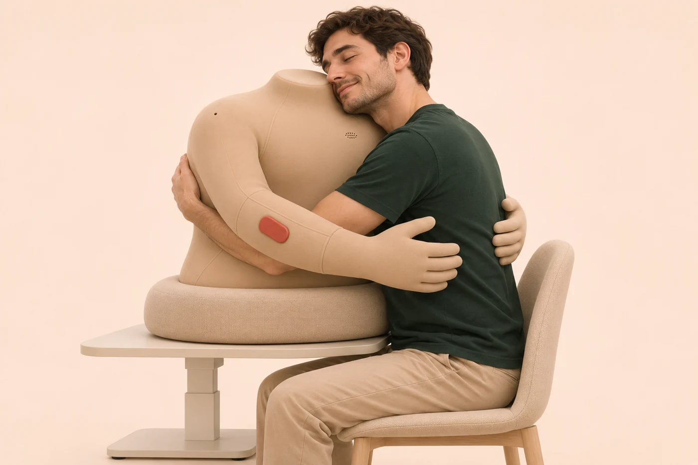
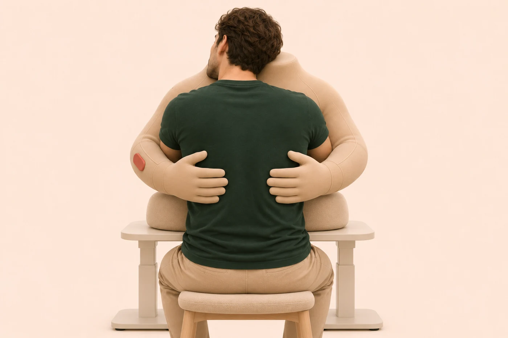

01 · Starting point
Being with people did not always feel like connection.
Since January, I had moved from one demanding period into the next. Even with friends, I sometimes felt lonely. What I wanted was the quiet feeling of being held. That experience started the project; it does not establish that other people need the same product.
I separated three questions: physical comfort, contact with a particular person, and permission to ask for support. Research on masculine norms informed questions about emotional self-reliance, without treating men as a uniform group.
How might a person choose an embrace, understand its source, and end it without negotiation?
The device is intended to support moments of comfort and existing relationships. It is not positioned as a replacement for human connection or mental-health care.
02 · What research can support
Touch findings informed the question, not a promise of benefit.
A touch-intervention meta-analysis reported pooled mental-outcome effects of g = 0.34 for objects or robots and g = 0.58 for human touch. These are subgroup estimates across heterogeneous studies, not a direct trial of this device against another person.
Bar length uses a common 0–0.8 Hedges' g scale. The confidence intervals are reported numerically, not encoded by the bars.
Packheiser et al. (2024), primary publication record. Small-study effects, unblinded designs, short time horizons, and varied interventions limit translation to an everyday home product.
Hugging-robot and mediated-touch research informed release, predictability, and remote contact. AI companionship findings differ by outcome and duration: momentary relief is not evidence of lasting loneliness reduction. The review records source access and limitations rather than treating all findings as equally conclusive.
03 · A construction hypothesis
A torso and two arms, with fewer assumptions about identity.
I chose a headless form with passive hands and a closed, padded neck stump. A neck–shoulder resting point offers a place for the cheek without adding a face or hair. Reach, firmness, and sleeve options are more useful starting variables than binary male/female versions.

| Element | Proposed target | What needs testing |
|---|---|---|
| Contact sleeve | Polyether TPU, 0.5–1.0 mm; non-silicone candidate | Friction, formulation, seams, cleaning and contact compatibility |
| Filling / frame | PU foam, 30–50 mm in selected regions; 6061-T6 aluminum tubes with PA12 guards | Compression fatigue, hard points, pinch paths and loads |
| Torso | 560 high × 420 wide × 230 deep (mm) | Fit across body sizes and seated positions |
| Arm and hand | 280 + 260 + 160 = 700 mm unflexed reach | Actual workspace and comfortable contact position |
| Base / total height | 560 × 400 × 80 mm base; 700 mm assembled height including 60 mm neck | Support height, handling and stability |
| Mass budget | 6.0 kg total: 4.5 kg body + 1.5 kg removable base | Weighed components, load cases and tip resistance |
| Local warmth | 33°C default; 32–35°C adjustable surface target | Thermal fixture tests, independent cutoffs and contact duration |
The first prototypes are unheated and passive. In the first heated prototype, the cheek-rest and neck remain unheated. Temperature targets are not safety clearance, and material-family names do not establish skin-contact safety.
04 · The body is part of the interface
The cheek rests at the neck–shoulder junction.

The intended posture keeps the nose and mouth clear, avoids throat contact, and places the arms below the neck. Support height and the ability to leave contact must be evaluated with adjustable body models.

Initial movement hypotheses are a pat with up to 30 mm travel and a stroke with up to 60 mm travel within the selected patch. These are displacement targets, not safe force or speed limits. Powered contact requires separate engineering review and guarded testing.
05 · Shared presence at a distance
A familiar voice gives a remote gesture context.
In partner mode, both people can embrace their devices while speaking directly through a proposed live voice connection. Accepting a call leaves touch off. Each person separately accepts a touch session, and either can stop it.
Invite a call
No automatic answering when someone hugs the device.
Speak together
Voice begins after acceptance; arms stay inactive.
Choose touch
A separate request, acceptance, and local action limit.
Leave freely
Mute, stop touch, or hang up. Disconnect clears touch permission.
A shoulder microphone, chest speaker, and hardware microphone mute are placement hypotheses. AI speech remains silent during the call. The proposal excludes recording, transcription, automatic translation, and routing partner audio to AI.
In solo mode, the user can choose quiet or selected supportive words, preview contact, and start deliberately. Holding is the initial condition; patting and stroking require a separate choice.
06 · What would change the design?
Test the bodily experience before adding autonomy.
The proposed first study uses 12–16 adult interviews and adjustable passive models. Recruitment includes varied genders, touch preferences, and experiences of emotional self-reliance. These are recruitment targets, not completed interviews.
- Form and agency: compare TPU and textile samples; test the cheek-rest position, support height, comfort, and exit.
- Partner value: compare an ordinary voice call with a call while both partners use passive models. Use an existing call tool before building embedded audio.
- One movement: investigate a single reviewed gesture in a guarded fixture after force, speed, release, and fault criteria are established.
- Later modules: evaluate thermal behavior and authenticated networking before supervised contact; add AI autonomy only for a justified research question.
Record hesitation, refusal, discomfort, perceived source of touch, and control errors alongside preference. Session length is not the success metric. No participant outcomes, hardware performance, or therapeutic benefits are claimed.
07 · Project materials
Research, decisions, and an inspectable next step.
Source and access record · Provisional design targets
Holding Together is a working name: an ongoing action rather than a promised outcome. The central design question remains whether the form supports a person's agency and relationships in ways that a simpler object or an ordinary call cannot.